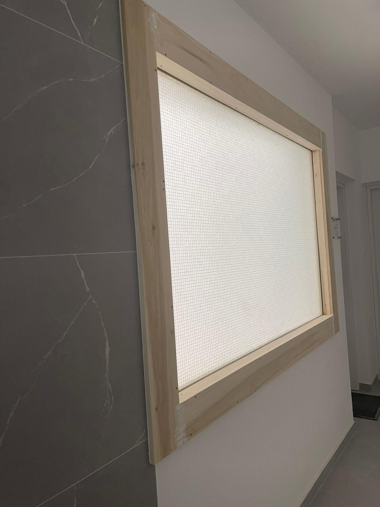
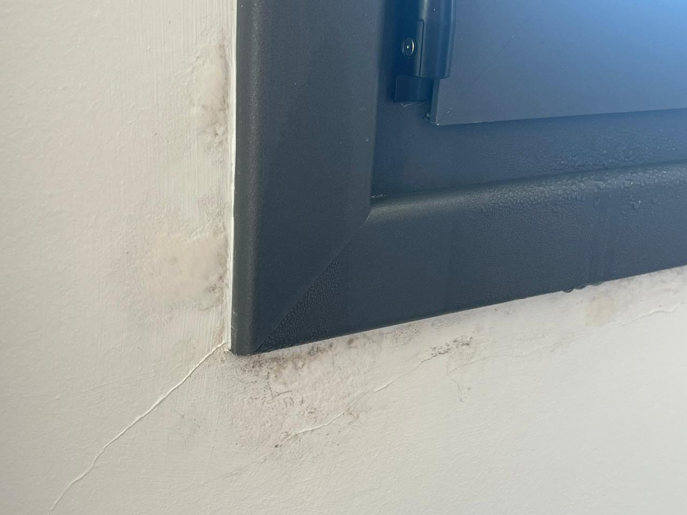
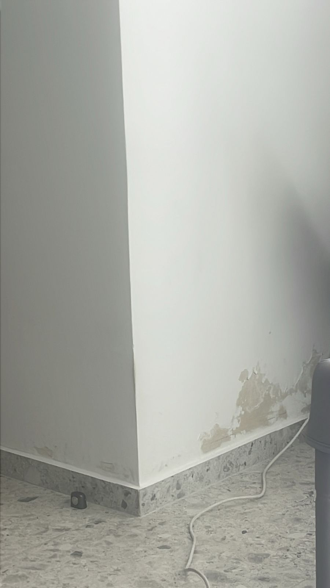
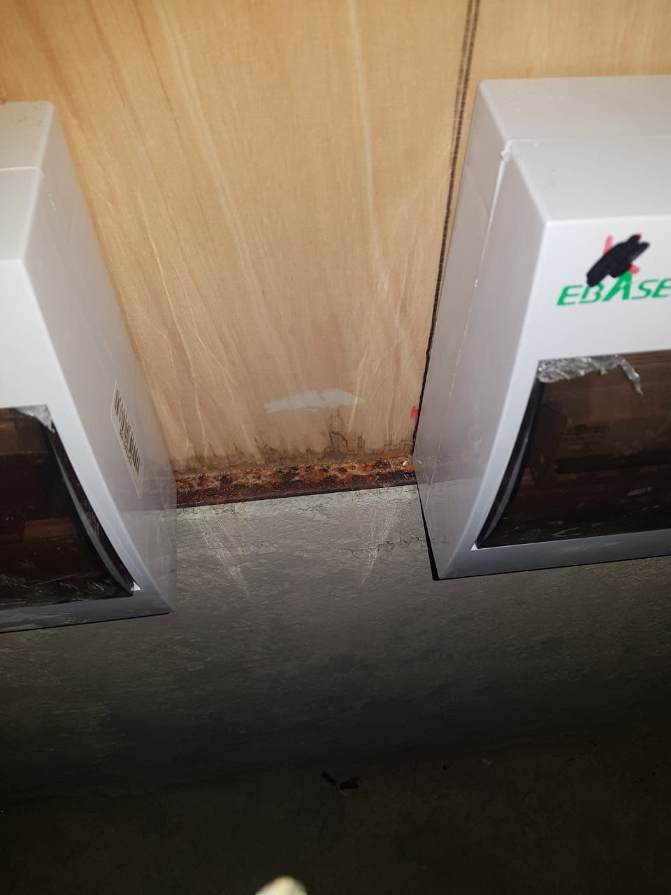

Main issues
Slideshow Indicators
An example of using buttons to indicate how many slides there are in the slideshow, and which slide the user is currently viewing.




❮
❯
An example of using buttons to indicate how many slides there are in the slideshow, and which slide the user is currently viewing.